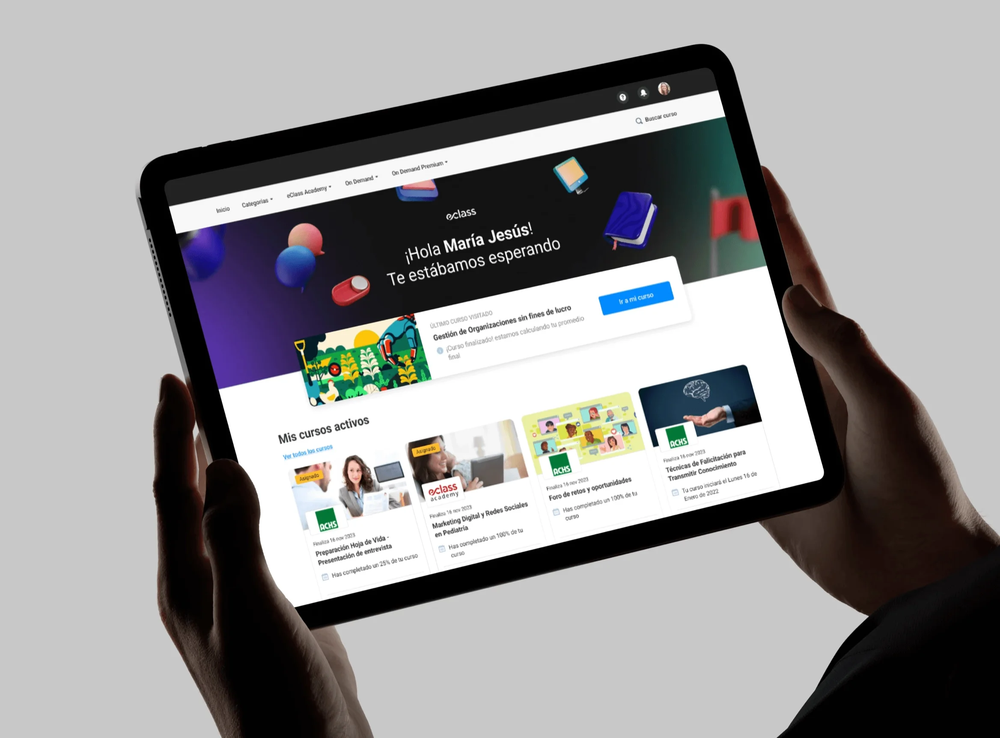
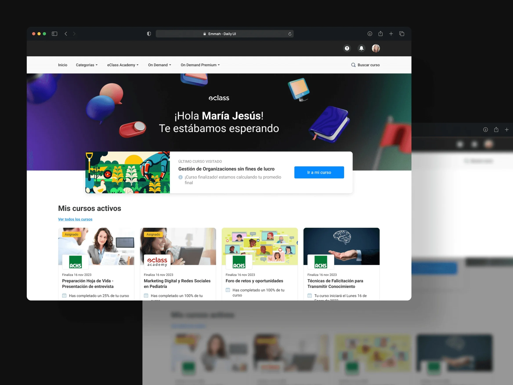
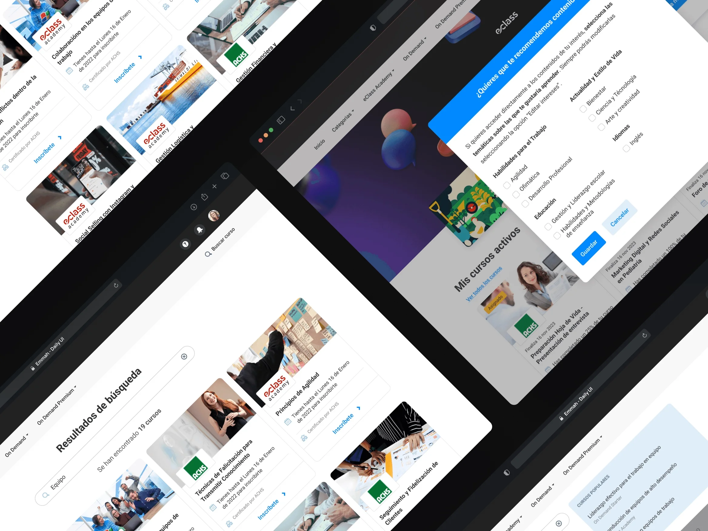
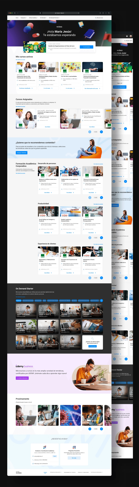

eClass On Demand
eClass is one of Chile's leading e-learning companies. Campus Virtual is its corporate training platform: courses and diploma programs that companies buy for their teams, with catalogs that get huge for the largest clients. The brief was to redesign all of it.

The problem
The brief came with a hypothesis already in place: the platform was falling short and needed more tools. The research turned up something else. Nobody was asking for new features. People couldn't find what was useful to them.
The catalog had grown, but the way to move through it hadn't. The categories didn't match how a learner thinks about their field of study, so browsing them led nowhere, and some views were hard to reach. The problem also scaled the opposite way from what you'd expect: on the largest campuses, more content made it worse.
A catalog you can't browse behaves like a small catalog. eClass was producing courses nobody ever got to see, and the company that had paid for the training didn't see its team using it.
What I did
- Research
- Information architecture
- Product design
- Navigation and search
- UI design
Tools
- Figma
- Maze
- Photoshop
- Jitter
Context
On eClass's product team.

What I did
The reference wasn't another LMS, it was streaming. Netflix, HBO Max and Disney solve exactly this problem: a catalog too large to go through in full, where the platform has to bring content to the person instead of waiting for them to look for it. Bringing that model over changes the role of the home, which stops being a menu and becomes a storefront.
I rebuilt the hierarchy of categories and subcategories so it reflected real fields of study rather than the catalog's internal structure. With that, browsing has a direction: entering a field already means moving forward. And I added paths between related courses, so that finding one opens the way to others instead of closing it.
Each section ended up with several ways to display content, because not everyone searches the same way. Someone who already knows what they want needs to get there fast; someone who doesn't needs to be shown. A single view forces you to choose which of the two to serve.
Finally, I rebuilt the menu and gave search its own section with filterable results. The views that used to be hard to reach are now one step away.

The outcome
Campus Virtual went from a catalog you had to know in advance to one that guides you. Learners log in and the platform suggests where to go next, instead of leaving them in front of an empty search box.
The streaming model didn't come in as a visual reference but as a distribution model. What's borrowed isn't the big cards: it's the idea that in a large catalog the product's job is to decide what to show first. Applied to training, that means the content a company bought actually reaches its team.
What stayed with me most from this project is the starting point. The brief asked for more tools and the research said what was missing was guidance. If I had built what was asked for, I would have added features to a platform whose problem was somewhere else.
